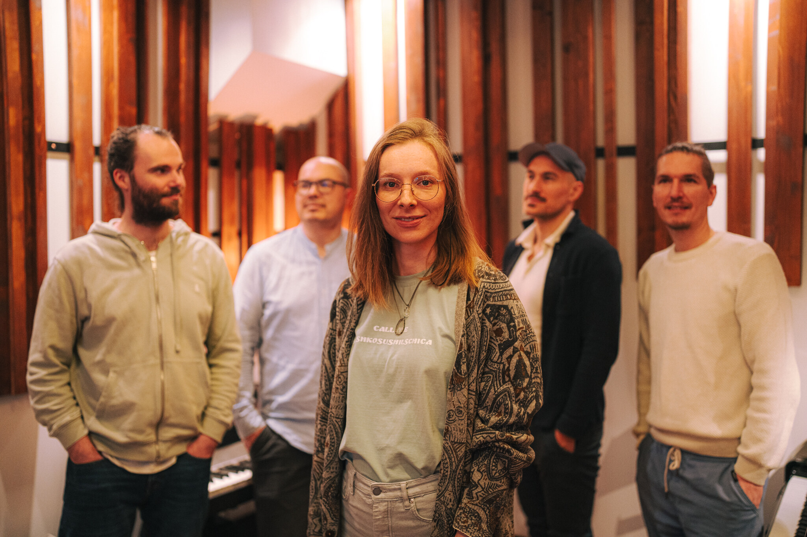
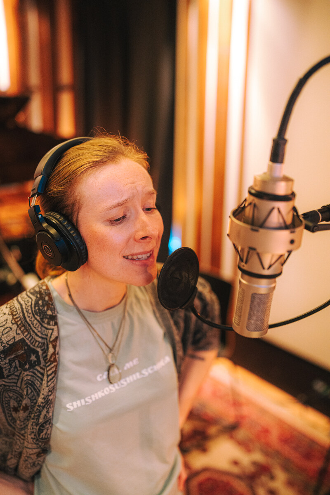
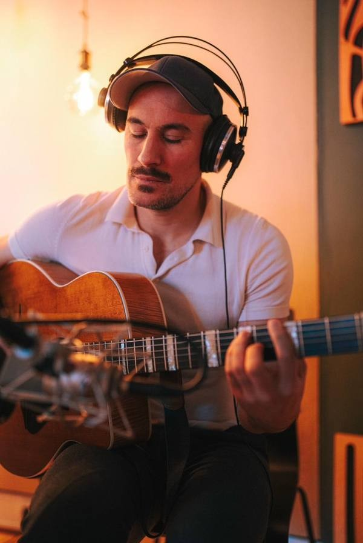
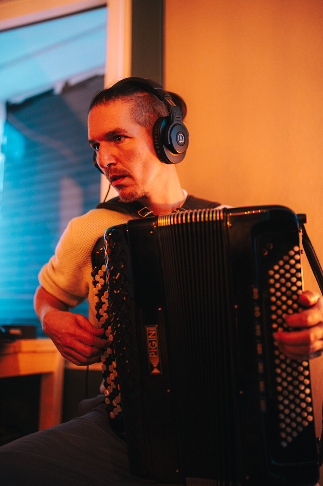
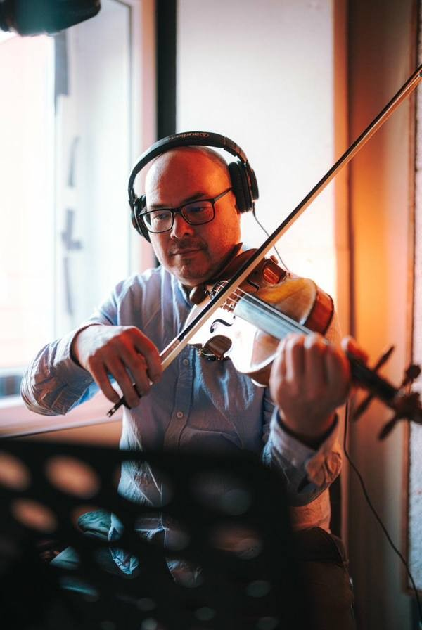
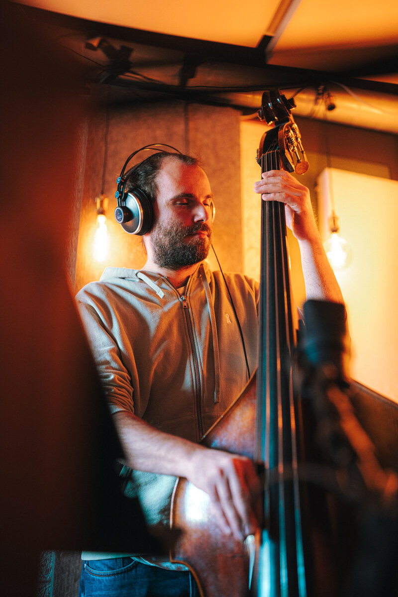
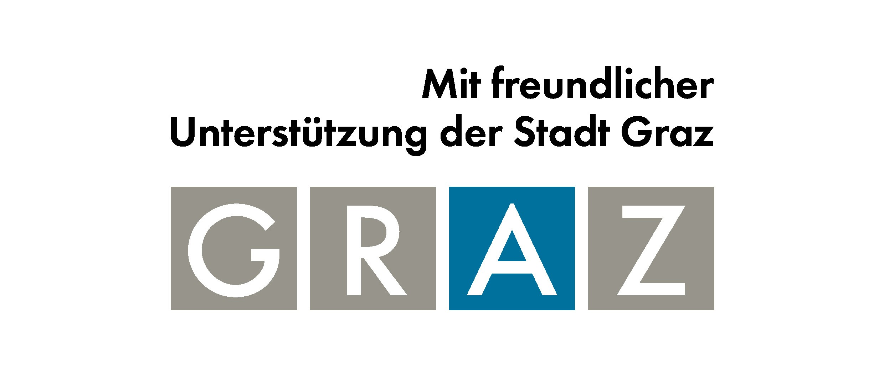

Sechs Lieder. Sechs Dichter·innen. Eine Reise durch Erinnerung, Exil und die Weigerung zur Vereinfachung.
Das Album vereint Gedichte von Rose Ausländer, Theodor Kramer, Mimi Grossberg, Paul Elbogen, Jura Soyfer und Erich Fried — Autorinnen und Autoren, deren Leben und Werk vom Exil, von Vertreibung und den Erschütterungen des zwanzigsten Jahrhunderts geprägt waren.
Was uns bei der Arbeit mit diesen Texten überraschte, war, wie wenig sie gealtert sind.
Sie stellen Fragen, die schmerzlich vertraut geblieben sind:
Was bedeutet es, irgendwo dazuzugehören?
Was bleibt, wenn der Boden unter einem wegbricht?
Wie bleibt man innerlich ehrlich, wenn Zugehörigkeit kompliziert wird?
Das Album präsentiert die Gedichte nicht als isolierte Literaturwerke, sondern als Teile einer größeren inneren Reise. Es versucht nicht, Geschichte zu erklären oder Nationen zu beurteilen. Stattdessen schafft es Raum für Nachdenken — eine Einladung, mit Komplexität zu sitzen, anstatt sie aufzulösen.
Der zentrale Gedanke ist die Weigerung zur Vereinfachung — Menschen, die auf Nationalität reduziert werden, Identität, die auf Schlagworte reduziert wird, Geschichte, die auf klare Narrative reduziert wird.
Europa war schon immer ein Ort der Bewegung — Menschen, die reisten, sich niederließen, ihre Sprachen und Traditionen mitbrachten und sie mit dem vermischten, was sie vorfanden. Die Musiker·innen dieses Albums sind Teil dieser Geschichte. Verschiedene Hintergründe, verschiedene Wege, verschiedene Dinge, die mitgenommen oder zurückgelassen wurden. Daher kommt der Klang.
Die Texte haben die Musik genauso geprägt wie die Musiker·innen selbst. Jedes Gedicht schlug etwas vor — ein Tempo, eine Textur, ein Gefühl, das sich nicht ganz benennen, aber spielen ließ. Die Musiker·innen hörten diese Vorschläge und folgten ihnen, fanden Verbindungen zwischen dem, was die Dichter·innen geschrieben hatten, und dem, was sie selbst immer in sich getragen hatten. Das Ergebnis ist etwas, das zu keiner einzigen Tradition gehört — und zu allen zugleich.
Die folgenden Texte sind lizenzpflichtig: „Der Emigrant" von Paul Elbogen, „Dich" von Erich Fried. Wir haben alle uns bekannten Stellen kontaktiert, um die Rechteinhaberinnen und Rechtsinhaber ausfindig zu machen, bisher jedoch keine Antwort erhalten. Unser Projekt ist nicht kommerziell. Sollten Sie die Rechte an einem dieser Texte halten oder verwalten, bitten wir Sie herzlich, sich mit uns in Verbindung zu setzen, damit wir eine Spende an Ihre Gesellschaft leisten bzw. eine angemessene Lizenzgebühr für die Nutzung des Textes in unserem Musikprojekt entrichten können. —






Lelio wurde ermöglicht durch die großzügige Unterstützung des Bundesministeriums für Kunst, Kultur, öffentlichen Dienst und Sport sowie der Stadt Graz. Wir sind dankbar für ihr Engagement für das kulturelle Leben und für die Stimmen, die es verdienen, gehört zu werden.
